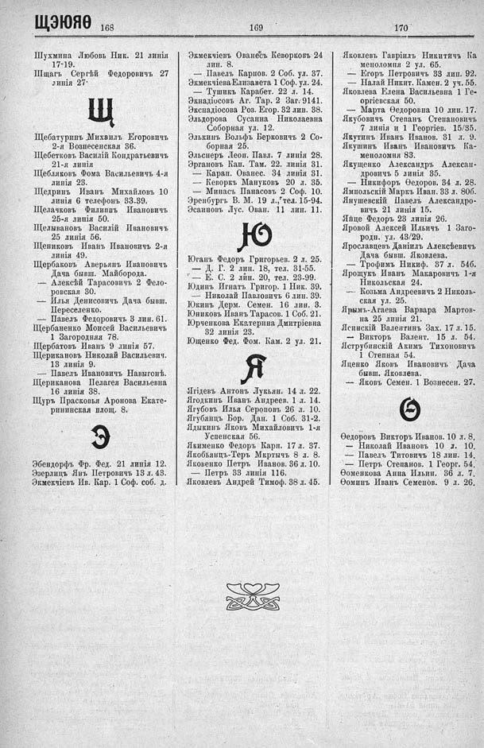

Лист источника 562
Скан

Распознанный текст
ЩЭЮЯѲ 168
Шухмина Любовь Ник. 21 линія
17-19.
Щпагъ Сергѣй Федоровичъ 27
линія 27.
Щ
Щебатуринъ Михаилъ Егоровичъ
2-я Вознесенская 36.
Щебетковъ Василій Кондратьевичъ
21-я линія
Щебляковъ Фома Васильевичъ 4-я
линія 23.
Щедринъ Иванъ Михайловъ 10
линія 6 телефонъ 33-39.
Щелачковъ Филиппъ Ивановичъ
25-я линія 50.
Щелывановъ Василій Ивановичъ
25 линія 56.
Щениковъ Иванъ Ивановичъ 2-я
линія 49.
Щербаковъ Аверьянъ Ивановичъ
Дача бывш. Майборода.
— Алексѣй Тарасовичъ 2 Федо-
ровская 30.
— Илья Денисовичъ Дача бывш.
Переселенко.
— Павелъ Федоровичъ 3 лин. 61.
Щербаненко Моисей Васильевичъ
1 Загородняя 78.
Щербатовъ Иванъ 9 линія 57.
Щерикановъ Николай Васильевич.
13 линія 9.
— Павелъ Ивановичъ Навыгонѣ.
Щериканова Пелагея Васильевна
16 линія 38.
Щуръ Прасковья Аронова Екате-
рининская площ. 8.
Э
Эбендорфъ Фр. Фед. 21 линія 12.
Эзерлицъ Янъ Петровичъ 13 л. 43.
Экмекчіевъ Ив. Кар. 1 Соф. соб. д.
169
Экмекчіевъ Ованесъ Кеворковъ 24
лин. 8.
— Павелъ Карпов. 2 Соб. ул. 37.
Экмекчіева Елизавета 1 Соф. ул. 24.
— Тушикъ Карабет. 22 л. 14.
Экнадіосовъ Аг. Тар. 2 Заг. 9141.
Экнадіосова Роз. Егор. 32 лин. 38.
Эльдорова Сусанна Николаевна
Соборная ул. 12.
Элькинъ Вольфъ Берковичъ 2 Со-
борная 25.
Эльснеръ Леон. Павл. 7 линія 28.
Эргановъ Кап. Там. 22. линія 31.
— Карап. Ованес. 34 линія 31.
— Кеворкъ Мануковъ 20 л. 35.
— Минасъ Панасовъ 2 Соф. 10.
Эренбургъ В. М. 19 л., тел. 15-94.
Эсаиновъ Лус. Ован. 11 лин. 11.
Ю
Юганъ Федоръ Григорьев. 2 л. 25.
— Д. Г. 2 лин. 18, тел. 31-55.
— Е. С. 2 лин. 20, тел. 23-99.
Юдинъ Игнатъ Григор. 1 Ник. 39.
— Николай Павловичъ 6 лин. 39.
Юкинъ Дерм. Семен. 16 лин. 3.
Юниковъ Иванъ Тарасов. 1 Соб. 21.
Юрченкова Екатерина Дмитріевна
32 линія 23.
Ющенко Фед. Фом. Кам. 2 ул. 21.
Я
Ягідевъ Антонъ Лукьян. 14 л. 22.
Ягодкинъ Иванъ Андреев. 1 л. 14.
Ягубовъ Илья Сероповъ 26 л. 10.
Ягубянцъ Бор. Дан. 1 Соб. 31-2.
Ядыкинъ Яковъ Михайловичъ 1-я
Успенская 56.
Якименко Федоръ Карп. 17 л. 37.
Якобьянцъ-Теръ Мкртычъ 8 л. 8.
Яковенко Петръ Иванов. 36 л. 10.
— Петръ 33 линія 116.
Яковлевъ Андрей Тимоф. 38 л. 45.
170
Яковлевъ Гавріилъ Никитичъ Ка
меноломня 2 ул. 65.
— Егоръ Петровичъ 33 лин. 92.
— Налай Никит. Камен. 2 уч. 55.
Яковлева Елена Васильевна 1 Ге-
оргіевская 50.
— Марта Ѳеодоровна 10 лин. 17.
Якубовичъ Степанъ Степановичъ
7 линія и 1 Георгіев. 15/35.
Якутинъ Иванъ Иванов. 31 л. 9.
Якушинъ Иванъ Ивановичъ Ка-
меноломня 83.
Якущенко Александръ Алексан-
дровичъ 5 линія 35.
— Никифоръ Ѳедоров. 34 л. 28.
Ямпольскій Маркъ Иван. 33 л. 80б.
Янушевскій Павелъ Александро-
вичъ 21 линія 15.
Япце Федоръ 23 линія 26.
Яровой Алексей Ильичъ 1 Заго-
родн. ул. 43/29.
Ярославцевъ Даніилъ Алексѣевичъ
Дача бывш. Яковлева.
— Трофимъ Никиф. 37 л. 54б.
Ярощукъ Иванъ Макаровичъ 1-я
Никольская 24.
— Козьма Андреевичъ 2 Николь-
ская ул. 25.
Ярымъ-Агаева Варвара Мартов-
на 25 линія 21.
Ясинскій Валентинъ Зах. 17 л. 15.
— Викторъ Валент. 15 л. 54.
Яструбинскій Акимъ Тихоновичъ
1 Степная 54.
Яценко Яковъ Ивановичъ Дача
бывш. Яковлева.
— Яковъ Семен. 1 Вознесен. 27.
Ѳ
Ѳедоровъ Викторъ Иванов. 10 л. 8.
— Николай Ивановъ 10 л. 10.
— Павелъ Титовичъ 18 лин. 14.
— Петръ Степанов. 1 Георг. 54.
Ѳоменкова Анна Ильин. 36 л. 7.
Ѳоминъ Иванъ Семенов. 9 л. 26.